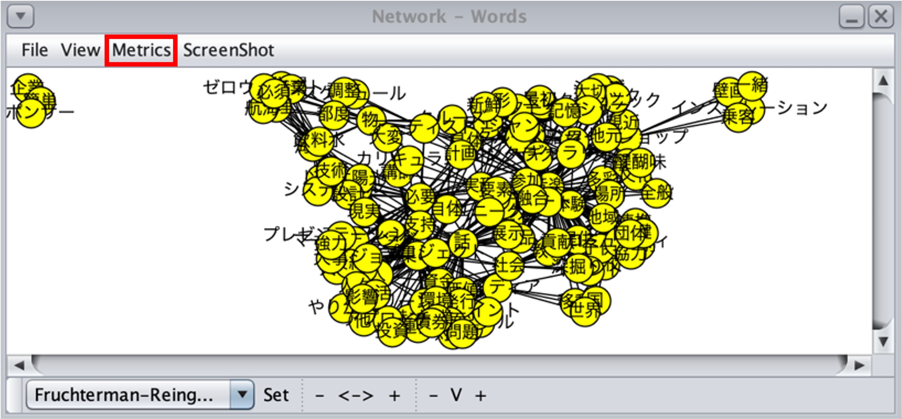
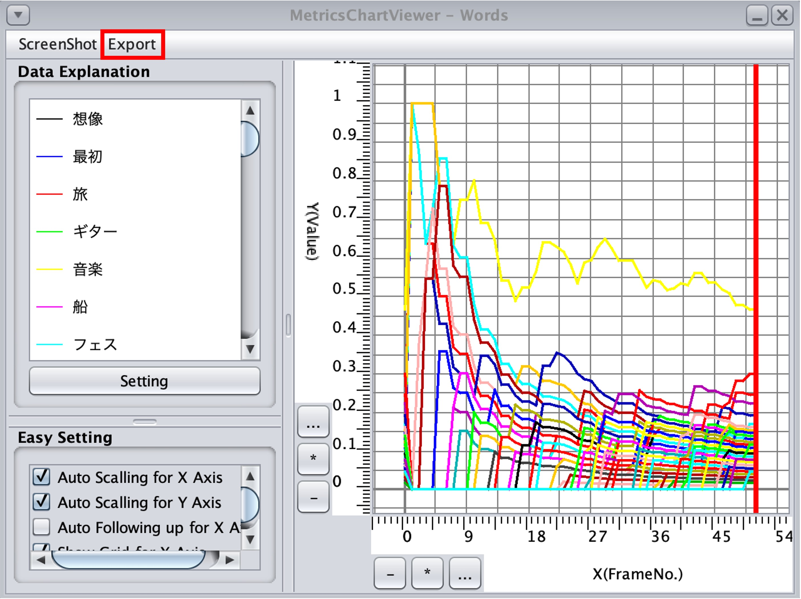
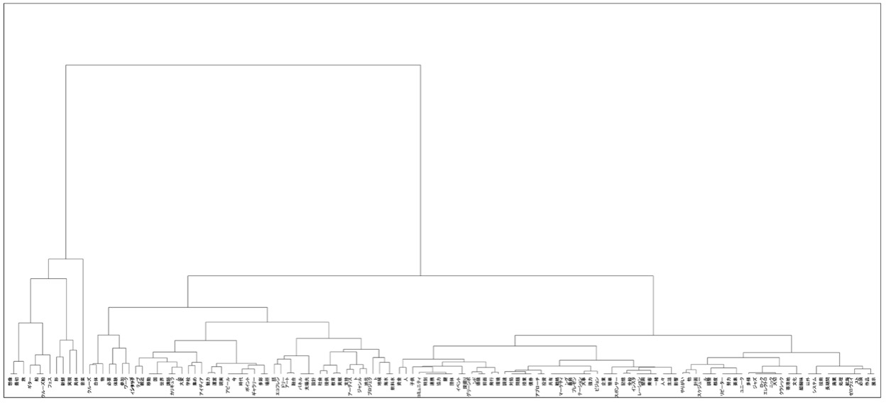
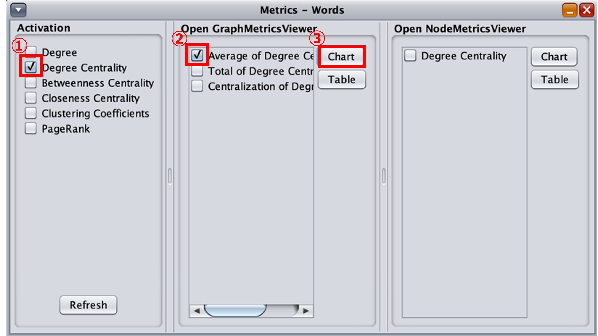
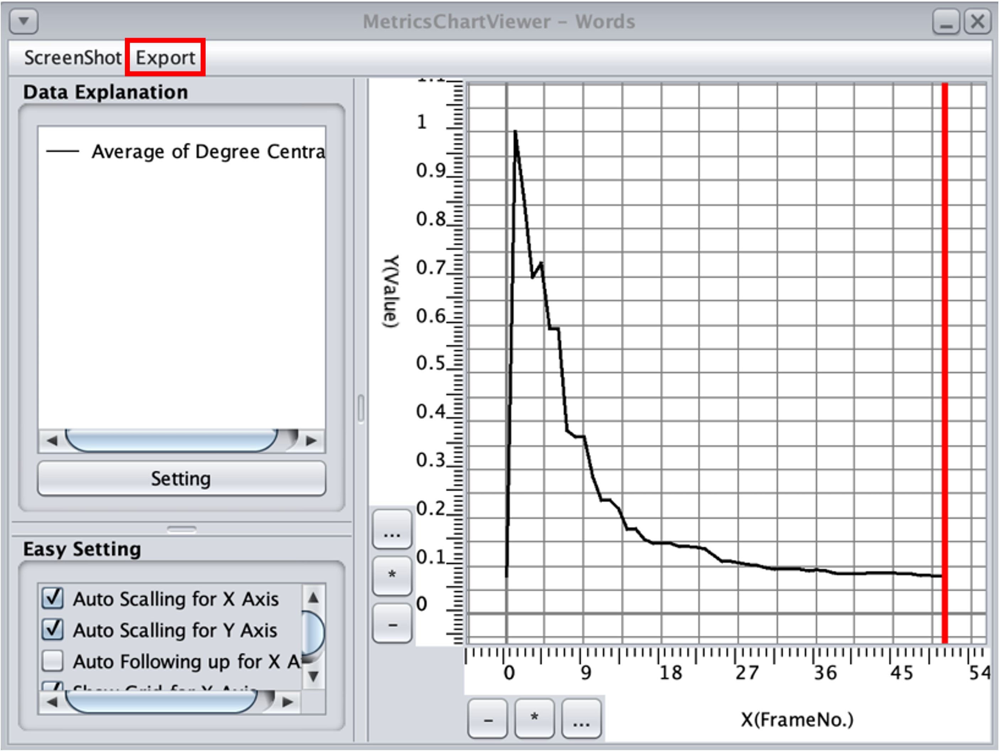

12.1. 次数中心性係数の時変パターンによる単語のクラスタ分析
KBDeXを利用することで，データとして読み込んだ対話内に存在する各単語の次数中心性係数を計算することが可能です．対話ターンが進むごとに変化する次数中心性係数の推移を活用して，対話内容を同じ時系列・同じ文脈で話されているいくつかのトピックに分割することで，対話内容とその変遷について分析することができます．
この「対話トピック (Discourse Topic)」を抽出するために，各単語の次数中心性係数の対話ターンの進行に伴う変化パターンを利用した単語のクラスタ分析を行います．
まず，7. 分析単位の設定で紹介した基本的な分析を行う時と同様に[Word]タブから分析対象としたい単語を選択します．この分析手法においては対話全体の内容をトピックとして分割する性質上，全ての名詞単語を選択することを推奨します．
次に，グループ全体の次数中心性係数の総和の推移を算出します．「Network – Words」のウィンドウ内からMetricsを選択し（図12-1），表示された「Metrics - Words」内「Activation」下の①「Degree Centrality」と「Open NodeMetricsViewer」下の②「Degree Centrality」にチェックを入れ，③「Chart」を選択します（図12-2）．
{kind=link}
図12-1 Metricsの選択

図12-2 Metricsでの単語の次数中心性係数の算出
「MetricsChartViewer - Word」ウィンドウが表示され，算出された各単語の次数中心性係数からグラフが生成されます（図12-3）．ここで算出された対話ターンの時系列に沿った次数中心性係数の推移のデータに対して，各種統計ソフトを利用してクラスタ分析を行うため，数値データの抽出が必要となります．「Export」から「CSV（be saved to metrics.csv）」を選択し，数値データを保存します．これによって，「metrics.csv」（ファイルは「kbdex/metrics.csv」にあります）として，今回算出した次数中心性係数の総和の数値データが保存されます．このデータを別のフォルダなどにコピーし，残しておきましょう．
{kind=link}
図12-3 計算結果の保存
出力した「metrics.csv」に格納されているデータから，各単語に対応する対話ターン毎の次数中心性係数を変数として，ウォード法を利用したクラスタ分析を行います．これによって，次数中心性係数の時変パターンの類似性を単語間の類似性としてクラスタリングを行うことができ，分析対象の対話データにおいて話者がどのような種類の単語を同じ時系列・議論の文脈で扱っていったのか，をデンドログラム上の単語間の距離によって確認することが可能です．サンプルデータを用いて実際にクラスタ分析を行った結果，図4のようなデンドログラムが出力されました．
{kind=link}
図12-4 サンプルデータから出力されたデンドログラム
次数中心性係数の時変パターンの類似度によって単語がクラスタ分けされ，近い時系列・文脈で言及された単語が確認できるようになりました．ここから「対話トピック」を抽出します．デンドログラム上の距離が近い単語同士の議論上での意味的な共通性質を確認し，それらがまとまる任意の距離でデンドログラムを分割します（図12-5）．分割した距離以下のクラスタを一つの大きなまとまりとして，これを「対話トピック」と定義します．
サンプルデータの分析では便宜上，４つの対話トピックを「対話トピックA〜D」と命名していますが，実際の研究では，分割した対話トピック毎にそこに含まれる単語の意味的な共通性質から対話トピックを命名・定義します．このように抽出された対話トピックの種類や，対話トピック間のデンドログラム上の距離や接続から，結果の解釈を行います（参考研究例：川久保ほか，2021; 2022）．

図12-5 サンプルデータの対話トピック分割例
12.2. 対話トピックの時間的推移の分析
クラスタ分析を元基に意味的なまとまりから「対話トピック」を抽出しました．この「対話トピック」の性質や対話中における位置付けをより深掘りするための分析として，「対話トピック」の時間的推移の分析があります．ここでは対話トピックに含まれている単語に絞ったネットワークから，次数中心性係数の平均を算出し，その時間的推移に着目します．この分析からグループ全体で，それぞれの対話トピックに対して，どの時系列にどれだけ中心的に議論を深めていたのかを比較分析可能になります．
まず，先ほど分割した各対話トピックのワードリストを作成します．ワードリスト作成後，1つ目の対話トピック（サンプルデータでは対話トピックA）のワードリストをコピーし，「Word Selection Window」内の「Selected Word」下に貼り付けます（図12-6）．

図12-6 対話トピックのワードリストの貼り付け
生成されたネットワークから，次数中心性係数の平均を算出します．この分析では対話トピック間の比較を行うため，単語量の差による影響をなくす目的で次数中心性係数の平均を利用します．「Network – Words」のウィンドウ内からMetricsを選択し（図12-7），表示された「Metrics - Words」内「Activation」下の①「Degree Centrality」と「Open GraphMetricsViewer」下の②「Average of Degree Centrality」にチェックを入れ，③「Chart」を選択します（図12-8）．

図12-7 Metricsの選択
{kind=link}
図12-8 Metricsでの次数中心性係数の平均の算出
「MetricsChartViewer - Word」ウィンドウが表示され，算出された対話トピック内単語の次数中心性係数の平均からグラフが生成されます（図12-9）．この後に行うグラフ間の比較のためにExcelなどの外部ツールを利用することから，「Export」から「CSV（be saved to metrics.csv）」を選択し，数値データを保存します．これによって，「metrics.csv」（ファイルは「kbdex/metrics.csv」にあります）として，今回算出した次数中心性係数の総和の数値データが保存されます．このデータを別のフォルダなどにコピーし，１つ目の対話トピックの算出結果であることを識別できるようにして残しておきましょう．
{kind=link}
図12-9 計算結果の保存
ここまでの作業を，残りの対話トピック（今回は対話トピックB〜D）についても行います．全ての対話トピックにおける次数中心性係数の平均のデータが揃った段階で，対話トピックの時間的推移の比較グラフを作成します．Excelなどのグラフ作成が可能な表計算ツールにここまでに出力してきたデータをコピーします．図12-10のExcel添付例のように縦軸に対話トピック，横軸に対話ターンを設定し，対応する数値データを出力したデータファイルからコピーしていきます．

図12-10 Excelへの算出データ添付例
作成した表から折れ線グラフを作成すると，図12-11のようなグラフが完成します．

図12-11 サンプルデータから実際に出力した対話トピックの時間的推移比較グラフ例
図12-11のように出力されたグラフから，各対話トピックの次数中心性係数の平均がどの時系列において上昇したか，もしくは下降したか，に着目して比較分析を行います．これから，対話の時系列に沿ってクラスタ分析によって明らかになった対話トピックがどのタイミングで話題の中心となったか，逆に話題の中心から遠ざかっていったか，という対話の変遷を解釈することが可能になります．
参考文献リスト
- 川久保アンソニージェイ太稀，大島純，大島律子 (2021). 知識構築活動におけるアイディア向上プロセス分析に基づく学習成果を向上させる条件．日本教育工学会論文誌，45(1), 31-41. https://doi.org/10.15077/jjet.44120
- 川久保アンソニージェイ太稀，大島純，大島律子 (2022). ブレンド型授業を用いた知識構築実践の設計と評価：知識構築分析学からのアプローチ．日本教育工学会論文誌，46(4), 617-629. https://doi.org/10.15077/jjet.46021